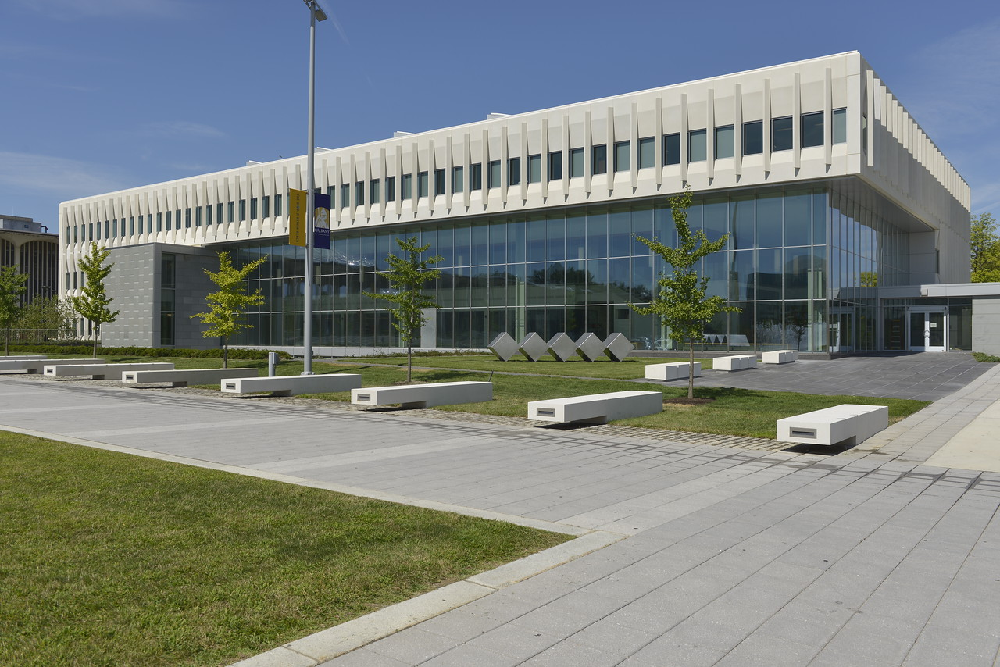
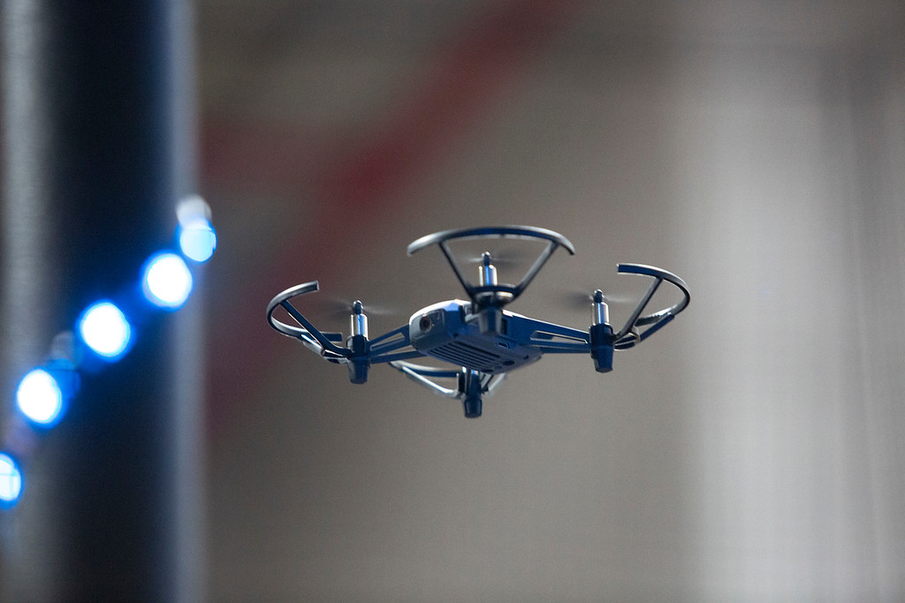
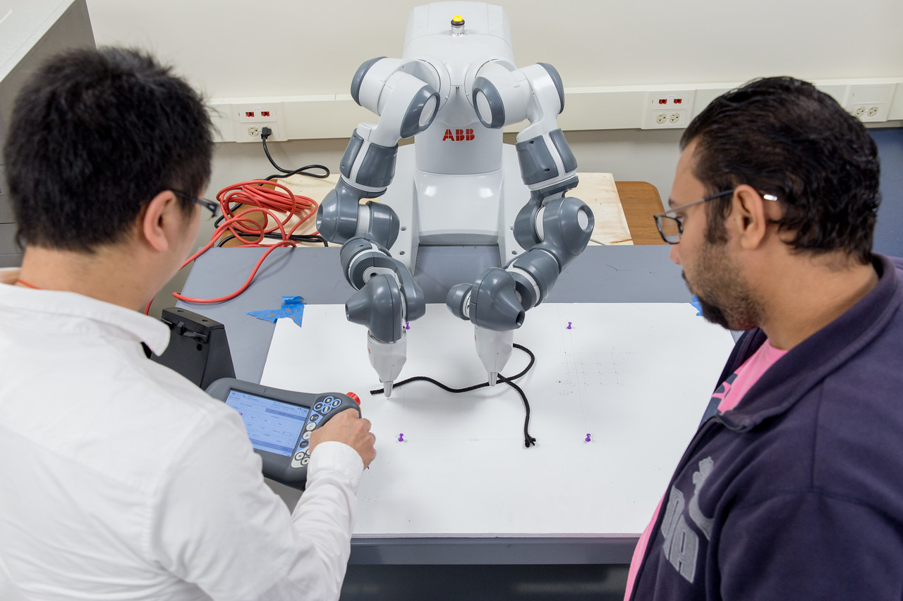
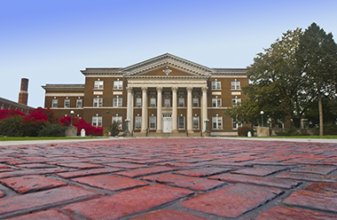
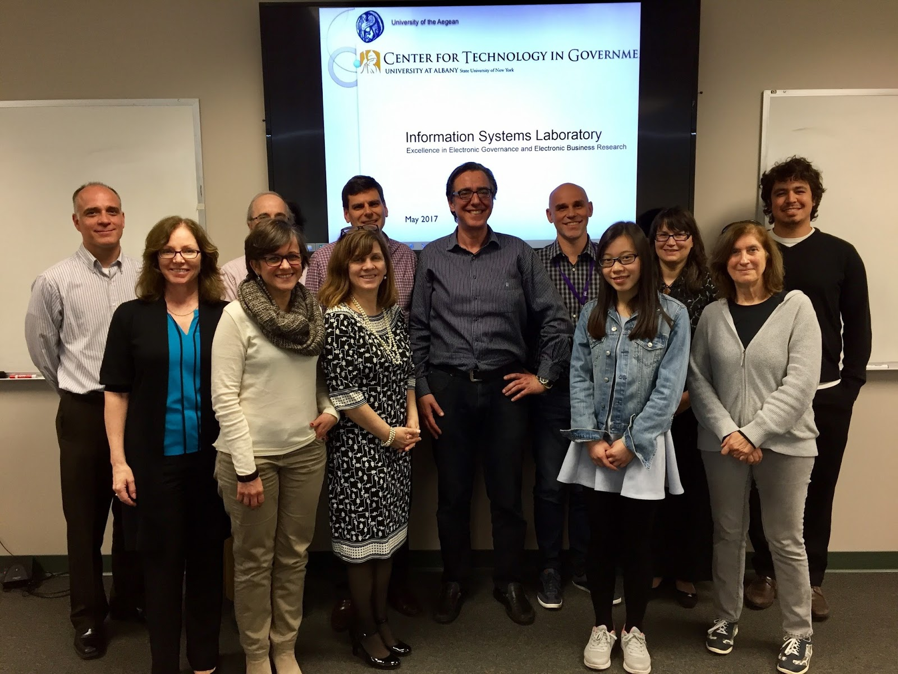
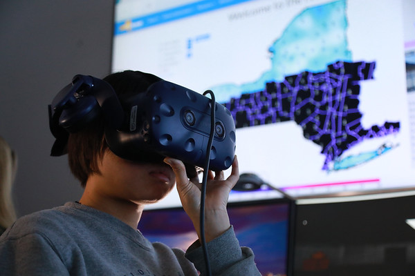
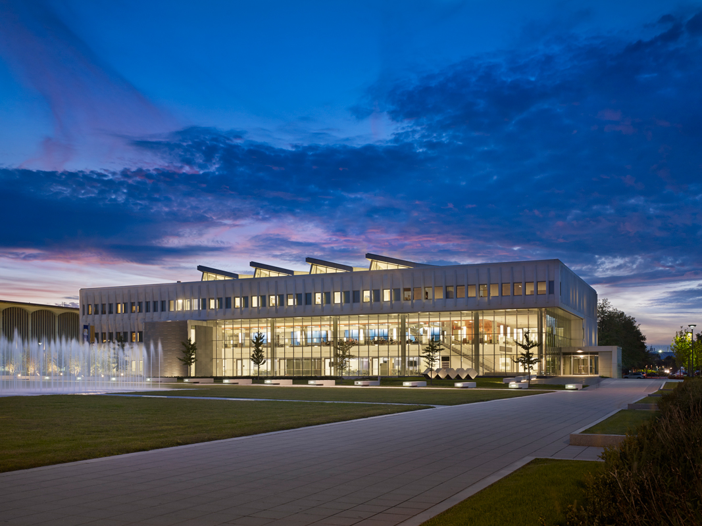

COLLEGES, SCHOOLS, AND CENTERS
School of Business, Information Security and Cybersecurity

Chair: Sanjay Goel, Director of Research, New York State Center for
Information Forensics and Assurance
Building Address: Business Building 311
Phone Number: 518-956-8323
Email: goel@albany.edu
We provide high quality business education and advance knowledge through scholarly and applied research, and by engaging effectively with alumni and the business and academic communities. We also offer innovative and distinctive niche programs and experiential learning opportunities, in collaboration with campus and corporate partners. These programs provide our students with a competitive edge in the job market.
With the school’s strong pipelines to the business community the majority of our students are placed in jobs before graduation and have access to top executives in leading firms. School of Business alumni become a powerful network of leaders truly shaping the business world.
College of Emergency Preparedness, Homeland Security and Cybersecurity

Dean: Robert P. Griffin
Building Address: Draper Hall 015
Phone Number: 518-442-5258
Email: rpgriffin@albany.edu
Our mission is to make a difference by providing high quality academic programs, blending an interdisciplinary and entrepreneurial spirit, fostering enthusiasm for learning and teaching, promoting operational application of knowledge, and leading cutting-edge research initiatives that bring together people, technology, and knowledge to address the challenges of the 21st century.
College of Engineering and Applied Sciences, Computer Science

Chair: Won Namgoong, Professor and Associate Dean for Research, Interim Chair Computer Science
Building Address: UAB 400
Phone Number: 518-956-8247
Email: wnamgoong@albany.edu
We inspire and educate a new generation of innovators as they prepare for exciting careers in the computing and engineering sciences. Our students learn and grow in a comprehensive research university setting among a diverse community of scholars committed to engineering and research excellence. We invite you to explore our programs, speak to our faculty, and embrace your opportunity to unleash greatness with us!
Department of Mathematics and Statistics
Chair: Michael Stessin, Professor and Chair
Building Address: ES 110
Phone Number: 518-442-4605
Email: stessin@albany.edu
The Department of Mathematics and Statistics currently consists of 24 tenured or tenure-track faculty members who specialize in a wide range of research areas that help make the University at Albany an R1 research university. Many of our faculty are supported by external research grants, such as grants from the National Science Foundation (NSF) or Simons Foundation. Our strongest areas of research are in algebra, analysis, combinatorics, geometry and topology, and probability and statistics. Reseachers from around the world come to speak in our various seminars and colloquia. In addition to providing our undergraduates with a solid foundation in mathematics, we are home to approximately 100-120 graduate students enrolled in one of our many graduate programs.
School of Education
Dean: Jason Lane, Professor & Interim Dean
Building Address: Catskill 321
Phone Number: 518-442-5092
Email: jlane@albany.edu
Rockfeller College

Dean: R. Karl Rethemeyer, Dean & Professor,
Public Administration & Policy
Building Address: Milne 102B
Phone Number: 518-442-5283
Email: kretheme@albany.edu
Centers & Labs
Center for Technology in Government
Director: Theresa Pardo,
Research Associate Professor, Public Administration & Policy,
Rockfeller College of Public Affairs and Policy
Email: tpardo@ctg.albany.edu
Phone: 518-442-3892
- We advise government leaders - at all levels - on innovative ways technology can help solve pressing public problems.
- We connect possible applications of technology with the policy and management needed to govern it through an overarching, informed, and long term perspective.
- We leverage data gathering and analytics to deliver informed and thorough programs and services that can transform the lives of citizens.
- We build relationships, trust, and the shared vision needed for diverse and disparate organizations to collaborate and cooperate on projects.
- We lead an international research community in the education of the next generation of public sector leaders.
National Center for Security & Preparedness
Director: Jaysin Kratoville, Interim Director
Email: jkratoville@albany.edu
The Homeland Security community’s strength derives from the diverse skills and experiences of those who support its broad mission. The National Center for Security & Preparedness (NCSP) prides itself on bringing together these perspectives to make a difference. As a center within the College of Emergency Preparedness, Homeland Security, and Cybersecurity, NCSP connects emerging ideas from the academic community with insight from practitioners to support training, exercises, policy development, and practical research.
Institute for Informatics, Logics and Security Studies
Director: Vacant
"The Institute for Informatics, Logics and Security Studies (ILS) at the University at Albany, State University of New York has been established in December 2001 by extending and broadening the scope of the Institute of Programming and Logics, which was part of the Computer Science Department since 1992. The formation of ILS represents a significant shift in the focus of the institute and its revised research priorities to address critical national security issues. ILS includes the Natural Language Information Processing Laboratory (NLIP) Lab formed in the Fall 2000.
The Institute’s mission is to increase the University at Albany’s reputation and visibility as a center of excellence in information technology research and education, contributing to various University-wide initiatives such as bio-informatics, information science, information assurance and security (credit kim). Through collaboration with key members of academia, government, and industry, the Institute is working to develop educational programs, advance pioneering research, create innovative technologies, transfer valuable knowledge and expertise, and foster an environment of cooperation and trust among its partners. We strive to create a collegial environment by bringing together students and researchers from various parts of the University and across New York State. The Institute is sponsoring a computational informatics seminar series, and serves as a host for visitors from industry, academia, and research-sponsoring government agencies."
New York State Center for Information Forensics and Assurance
Director: Sanjay Goel, Interim Director
Email: goel@albany.edu
Phone: 518-956-8323
"The New York State Center for Information Forensics and Assurance (CIFA) fosters information assurance and forensics activity at UAlbany. It is a partnership of the University at Albany, SUNY, New York State Office of Information Technology Services, and the New York State Police.
CIFA's mission is research and education to better enable practitioners to address real problems in information forensics and assurance, especially in the area of public protection and cyber defense.
Specifically, CIFA:
-Targets the public sector workforce in an effort to build knowledge resources and practical skills within state and local government.
-Develops and deploys courseware for academic and professional education programs in related disciplines.
-Provides a home for multidisciplinary researchers and practitioners developing workable approaches to emerging information forensics and assurance issues and effective methods to facilitate learning and dissemination of these approaches."
Forensics, Analytics, Complexity, Energy and Transportation Security Center (FACETS)
Director: Sanjay Goel, Interim Director
Email: goel@albany.edu
Phone: 518-956-8323
FACETS is a leading research center in Digital Forensics and Cybersecurity, dedicated to protecting the nation’s electronic infrastructure.
With funding from the National Science Foundation (NSF), Intelligence Advanced Research Projects Activity (IARPA), and the National Institute
of Standards and Technology (NIST), among others, UAlbany’s FACETS Center fosters innovative research built on blended strengths in information
security, data mining, cybersecurity, digital forensics and information technology security, and research strengths in behavioral foundations of
security, self-organized systems, cyber-warfare, resilient transportation, SCADA and other cyber-intelligent systems.